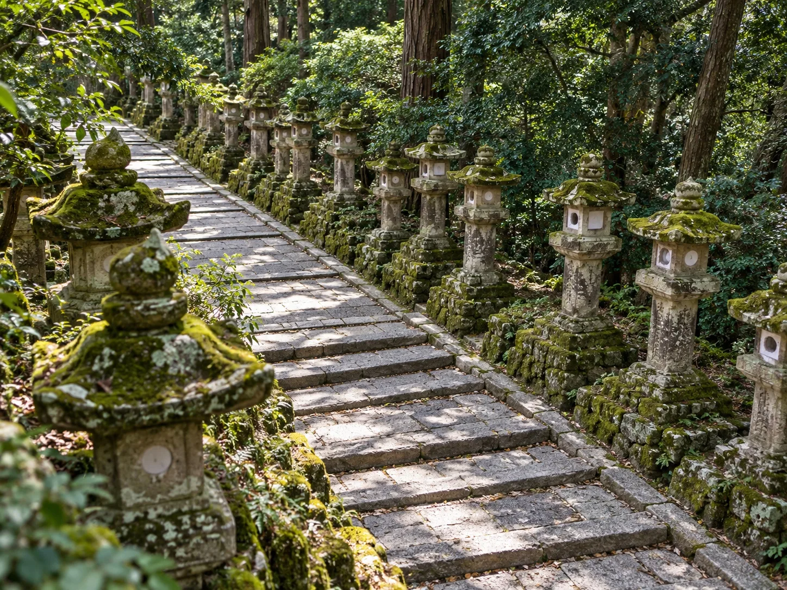
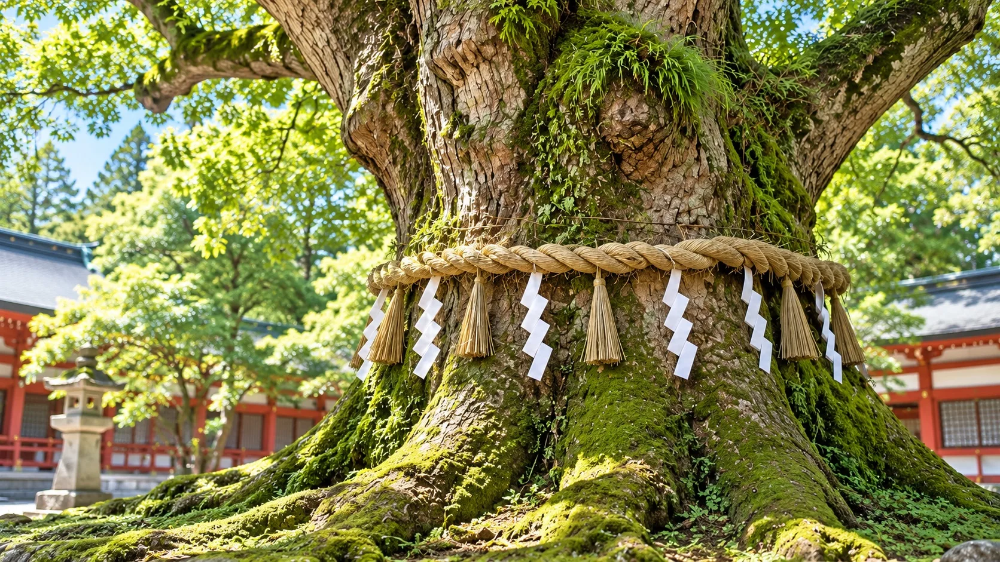
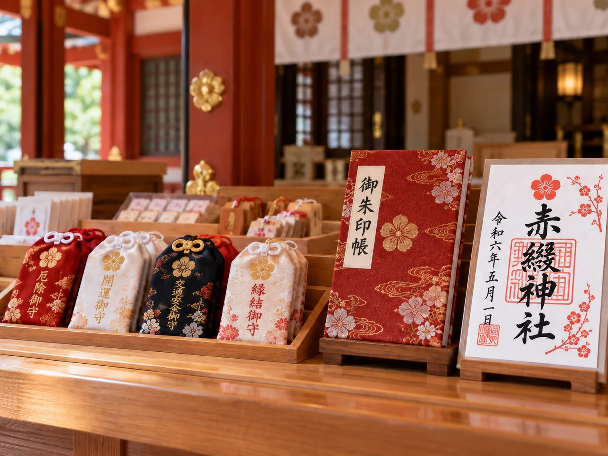

Visit参拝案内
Worship Etiquette
参拝のご案内
境内では心静かにお参りください。参道では周囲の方に配慮し、手水で手と心を清めてから拝殿へお進みください。
豊かな木々や石灯籠の並ぶ境内を、季節の移ろいを感じながらゆっくりとお巡りいただけます。
Precincts
境内のご紹介
参道から手水舎、御神木へ。境内の見どころをご紹介します。



Amulets & Goshuin
御守・御朱印
日々の安寧や良いご縁を願う御守と、参拝の証となる御朱印をご用意しています。
境内でお参りの際に、静かな気持ちでお受けください。
Online Worship
Web参拝のご案内
遠方にお住まいの方にも、オンラインでお参りいただけます。